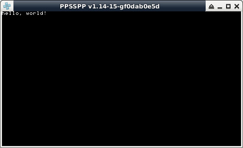

參考資訊：
http://psp.jim.sh/pspsdk-doc/index.html
main.c
#include <pspkernel.h>
#include <pspctrl.h>
#include <pspdebug.h>
#include <pspdisplay.h>
#include <psptypes.h>
#include <pspiofilemgr.h>
#include <stdio.h>
#include <string.h>
#include <sys/types.h>
#include <sys/unistd.h>
#include <sys/param.h>
PSP_MODULE_INFO("main", 0, 1, 1);
int main(void)
{
pspDebugScreenInit();
pspDebugScreenPrintf("hello, world!");
sceKernelDelayThread(3000000);
sceKernelExitGame();
return 0;
}
Makefile
TARGET = hello OBJS = main.o EXTRA_TARGETS = EBOOT.PBP PSP_EBOOT_TITLE = main PSPSDK = $(shell psp-config --pspsdk-path) include $(PSPSDK)/lib/build.mak
編譯、執行
$ export PSPDEV=/opt/pspdev
$ export PATH=$PATH:$PSPDEV/bin
$ make
psp-gcc -I. -I/opt/pspdev/psp/sdk/include -D_PSP_FW_VERSION=150 -c -o main.o main.c
psp-gcc -I. -I/opt/pspdev/psp/sdk/include -D_PSP_FW_VERSION=150 -L. -L/opt/pspdev/psp/sdk/lib main.o -lpspdebug -lpspdisplay -lpspge -lpspctrl -lpspsdk -lc -lpspnet -lpspnet_inet -lpspnet_apctl -lpspnet_resolver -lpsputility -lpspuser -lpspkernel -o hello.elf
psp-fixup-imports hello.elf
mksfo 'main' PARAM.SFO
psp-strip hello.elf -o hello_strip.elf
pack-pbp EBOOT.PBP PARAM.SFO NULL \
NULL NULL NULL \
NULL hello_strip.elf NULL
Saved to EBOOT.PBP
rm -f hello_strip.elf
$ psp --xres 480 --yres 272 ./EBOOT.PBP
完成
